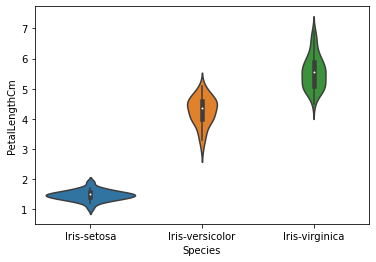
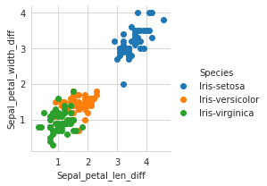

Tugas-1
Contents
Tugas-1#
import pandas as pd
import math
data = pd.read_csv("https://raw.githubusercontent.com/ZuniAmandaDewi/dataset/main/tested.csv")
data
| PassengerId | Survived | Pclass | Name | Sex | Age | SibSp | Parch | Ticket | Fare | Cabin | Embarked | |
|---|---|---|---|---|---|---|---|---|---|---|---|---|
| 0 | 892 | 0 | 3 | Kelly, Mr. James | male | 34.5 | 0 | 0 | 330911 | 7.8292 | NaN | Q |
| 1 | 893 | 1 | 3 | Wilkes, Mrs. James (Ellen Needs) | female | 47.0 | 1 | 0 | 363272 | 7.0000 | NaN | S |
| 2 | 894 | 0 | 2 | Myles, Mr. Thomas Francis | male | 62.0 | 0 | 0 | 240276 | 9.6875 | NaN | Q |
| 3 | 895 | 0 | 3 | Wirz, Mr. Albert | male | 27.0 | 0 | 0 | 315154 | 8.6625 | NaN | S |
| 4 | 896 | 1 | 3 | Hirvonen, Mrs. Alexander (Helga E Lindqvist) | female | 22.0 | 1 | 1 | 3101298 | 12.2875 | NaN | S |
| ... | ... | ... | ... | ... | ... | ... | ... | ... | ... | ... | ... | ... |
| 413 | 1305 | 0 | 3 | Spector, Mr. Woolf | male | NaN | 0 | 0 | A.5. 3236 | 8.0500 | NaN | S |
| 414 | 1306 | 1 | 1 | Oliva y Ocana, Dona. Fermina | female | 39.0 | 0 | 0 | PC 17758 | 108.9000 | C105 | C |
| 415 | 1307 | 0 | 3 | Saether, Mr. Simon Sivertsen | male | 38.5 | 0 | 0 | SOTON/O.Q. 3101262 | 7.2500 | NaN | S |
| 416 | 1308 | 0 | 3 | Ware, Mr. Frederick | male | NaN | 0 | 0 | 359309 | 8.0500 | NaN | S |
| 417 | 1309 | 0 | 3 | Peter, Master. Michael J | male | NaN | 1 | 1 | 2668 | 22.3583 | NaN | C |
418 rows × 12 columns
Menghitung Nominal/Kategorikal#
\[ d(i,j) = \frac {p-m}{p}\]
ket :
p = jumlah data yang dibandingkan
m = jumlah data yang sama
data[["Pclass","Embarked"]].head(5)
| Pclass | Embarked | |
|---|---|---|
| 0 | 3 | Q |
| 1 | 3 | S |
| 2 | 2 | Q |
| 3 | 3 | S |
| 4 | 3 | S |
def d1(i,j):
P = 2
M = 0
for col in ["Pclass","Embarked"]:
if data[col][i] == data[col][j]:
M += 1
return (P-M)/P
d1(0,1)
0.5
d1(2,3)
1.0
d1(3,4)
0.0
Menghitung Biner Simetris#
\[ d(i,j) = \frac {r+s}{q+r+s+t}\]
ket:
r = i=1 : j=0
s = i=0 : j=1
q = i=1 : j=1
t = i=0 : j=0
data[["Survived","Sex"]].head(5)
| Survived | Sex | |
|---|---|---|
| 0 | 0 | male |
| 1 | 1 | female |
| 2 | 0 | male |
| 3 | 0 | male |
| 4 | 1 | female |
masukan1 = "male"
masukan2 = "female"
value1 = 1
value2 = 0
def perubahan (sex):
return value1 if sex == masukan1 else value2
data["Sex"] = data["Sex"].apply(perubahan)
data[["Survived","Sex"]].head(5)
| Survived | Sex | |
|---|---|---|
| 0 | 0 | 1 |
| 1 | 1 | 0 |
| 2 | 0 | 1 |
| 3 | 0 | 1 |
| 4 | 1 | 0 |
def d2(i,j):
q = 0
r = 0
s = 0
t = 0
for col in ["Survived","Sex"]:
if data[col][i] == 1 and data[col][j] == 1:
q += 1
elif data[col][i] == 1 and data[col][j] == 0:
r += 1
elif data[col][i] == 0 and data[col][j] == 1:
s += 1
else:
t += 1
return (r+s)/(q+r+s+t)
d2(0,1)
1.0
d2(2,3)
0.0
d2(3,4)
1.0
Menghitung Biner Asimetris#
\[ d(i,j)= \frac {r+s}{q+r+s}\]
ket:
r = i=1 : j=0
s = i=0 : j=1
q = i=1 : j=1
def d3(i,j):
q = 0
r = 0
s = 0
for col in ["Survived","Sex"]:
if data[col][i] == 1 and data[col][j] == 1:
q += 1
elif data[col][i] == 1 and data[col][j] == 0:
r += 1
elif data[col][i] == 0 and data[col][j] == 1:
s += 1
return (r+s)/(q+r+s)
d3(0,1)
1.0
d3(2,3)
0.0
d3(3,4)
1.0
Menghitung Numerik#
\[ d(i,j) = \sqrt{{(Xa1-Xb1)^2}+{(Xa2-Xb2)^2}}\]
data[["Ticket","Fare"]].head(5)
| Ticket | Fare | |
|---|---|---|
| 0 | 330911 | 7.8292 |
| 1 | 363272 | 7.0000 |
| 2 | 240276 | 9.6875 |
| 3 | 315154 | 8.6625 |
| 4 | 3101298 | 12.2875 |
data.describe()
| PassengerId | Survived | Pclass | Sex | Age | SibSp | Parch | Fare | |
|---|---|---|---|---|---|---|---|---|
| count | 418.000000 | 418.000000 | 418.000000 | 418.000000 | 332.000000 | 418.000000 | 418.000000 | 417.000000 |
| mean | 1100.500000 | 0.363636 | 2.265550 | 0.636364 | 30.272590 | 0.447368 | 0.392344 | 35.627188 |
| std | 120.810458 | 0.481622 | 0.841838 | 0.481622 | 14.181209 | 0.896760 | 0.981429 | 55.907576 |
| min | 892.000000 | 0.000000 | 1.000000 | 0.000000 | 0.170000 | 0.000000 | 0.000000 | 0.000000 |
| 25% | 996.250000 | 0.000000 | 1.000000 | 0.000000 | 21.000000 | 0.000000 | 0.000000 | 7.895800 |
| 50% | 1100.500000 | 0.000000 | 3.000000 | 1.000000 | 27.000000 | 0.000000 | 0.000000 | 14.454200 |
| 75% | 1204.750000 | 1.000000 | 3.000000 | 1.000000 | 39.000000 | 1.000000 | 0.000000 | 31.500000 |
| max | 1309.000000 | 1.000000 | 3.000000 | 1.000000 | 76.000000 | 8.000000 | 9.000000 | 512.329200 |
Standar Deviasi $\(Rumus:\)$$\(z=\frac{x-μ}{𝔡}\)$
#Normalisasi Pclass
std1 = 0.841838
mean1 = 2.265550
for col1 in ["Pclass"]:
value1 = data[col1]
hasil1 = (value1-mean1)/std1
print(hasil1)
# Normalisasi Fare
std2 = 55.907576
mean2 = 35.627188
for col2 in ["Fare"]:
value2 = data[col2]
hasil2 = (value2-mean2)/std2
print(hasil2)
0 0.872436
1 0.872436
2 -0.315441
3 0.872436
4 0.872436
...
413 0.872436
414 -1.503318
415 0.872436
416 0.872436
417 0.872436
Name: Pclass, Length: 418, dtype: float64
0 -0.497213
1 -0.512045
2 -0.463974
3 -0.482308
4 -0.417469
...
413 -0.493264
414 1.310606
415 -0.507573
416 -0.493264
417 -0.237336
Name: Fare, Length: 418, dtype: float64
def d4(i,j,h):
result = 0
for col in [hasil1, hasil2]:
result = math.pow(abs(col[i] - col[j]), h)
return result**(1/h)
d4(0,1,2)
0.014831621388843641
d4(2,3,2)
0.018333830105601412
d4(3,4,2)
0.06483915525151723
##Dissimiliarity
dTotal1 = d1(0,1) + d2(0,1) + d3(0,1) + d4(0,1,2)
dTotal2 = d1(2,3) + d2(2,3) + d3(2,3) + d4(2,3,2)
dTotal3 = d1(3,4) + d2(3,4) + d3(3,4) + d4(3,4,2)
print("Total 1 :",dTotal1)
print("Total 2 :",dTotal2)
print("Total 3 :",dTotal3)
Total 1 : 2.5148316213888435
Total 2 : 1.0183338301056013
Total 3 : 2.064839155251517
Tugas-2#
Diskritisasi#
nilai2 = pd.read_csv("https://raw.githubusercontent.com/ZuniAmandaDewi/dataset/main/Iris.csv")
nilai2
| Id | SepalLengthCm | SepalWidthCm | PetalLengthCm | PetalWidthCm | Species | |
|---|---|---|---|---|---|---|
| 0 | 1 | 5.1 | 3.5 | 1.4 | 0.2 | Iris-setosa |
| 1 | 2 | 4.9 | 3.0 | 1.4 | 0.2 | Iris-setosa |
| 2 | 3 | 4.7 | 3.2 | 1.3 | 0.2 | Iris-setosa |
| 3 | 4 | 4.6 | 3.1 | 1.5 | 0.2 | Iris-setosa |
| 4 | 5 | 5.0 | 3.6 | 1.4 | 0.2 | Iris-setosa |
| ... | ... | ... | ... | ... | ... | ... |
| 145 | 146 | 6.7 | 3.0 | 5.2 | 2.3 | Iris-virginica |
| 146 | 147 | 6.3 | 2.5 | 5.0 | 1.9 | Iris-virginica |
| 147 | 148 | 6.5 | 3.0 | 5.2 | 2.0 | Iris-virginica |
| 148 | 149 | 6.2 | 3.4 | 5.4 | 2.3 | Iris-virginica |
| 149 | 150 | 5.9 | 3.0 | 5.1 | 1.8 | Iris-virginica |
150 rows × 6 columns
nilai2[["SepalLengthCm"]].head(5)
| SepalLengthCm | |
|---|---|
| 0 | 5.1 |
| 1 | 4.9 |
| 2 | 4.7 |
| 3 | 4.6 |
| 4 | 5.0 |
nilai2.describe()
| Id | SepalLengthCm | SepalWidthCm | PetalLengthCm | PetalWidthCm | |
|---|---|---|---|---|---|
| count | 150.000000 | 150.000000 | 150.000000 | 150.000000 | 150.000000 |
| mean | 75.500000 | 5.843333 | 3.054000 | 3.758667 | 1.198667 |
| std | 43.445368 | 0.828066 | 0.433594 | 1.764420 | 0.763161 |
| min | 1.000000 | 4.300000 | 2.000000 | 1.000000 | 0.100000 |
| 25% | 38.250000 | 5.100000 | 2.800000 | 1.600000 | 0.300000 |
| 50% | 75.500000 | 5.800000 | 3.000000 | 4.350000 | 1.300000 |
| 75% | 112.750000 | 6.400000 | 3.300000 | 5.100000 | 1.800000 |
| max | 150.000000 | 7.900000 | 4.400000 | 6.900000 | 2.500000 |
menghitung Rentang#
\[ w = \frac {max-min}{k}\]
ket:
K = jenis kategori yang digunakan
def iris(min, max):
k = 4
w = (max - min)/k
return (w)
iris(4.3,7.9)
0.9000000000000001
Jarak Rentang#
\[(min + i * w)\]
\begin{align} {min + i * w} \end {align)
def rentang(i):
min = 4.3
v = min + i * iris(4.3,7.9)
return (v)
rentang(1)
5.2
rentang(2)
6.1
rentang(3)
7.0
rentang(4)
7.9
for col in ["SepalLengthCm"]:
nilai = nilai2[col]
def equal(nilai):
if nilai >= 4.3 and nilai < 5.2:
return "A"
elif nilai >= 5.2 and nilai < 6.1:
return "B"
elif nilai >= 6.1 and nilai < 7.0:
return "C"
elif nilai >= 7.0 and nilai < 7.9:
return "D"
nilai2["SepalLengthCm"] = nilai.apply(equal)
nilai2[["SepalLengthCm"]].head(150)
| SepalLengthCm | |
|---|---|
| 0 | A |
| 1 | A |
| 2 | A |
| 3 | A |
| 4 | A |
| ... | ... |
| 145 | C |
| 146 | C |
| 147 | C |
| 148 | C |
| 149 | B |
150 rows × 1 columns
nilai2
| Id | SepalLengthCm | SepalWidthCm | PetalLengthCm | PetalWidthCm | Species | |
|---|---|---|---|---|---|---|
| 0 | 1 | A | 3.5 | 1.4 | 0.2 | Iris-setosa |
| 1 | 2 | A | 3.0 | 1.4 | 0.2 | Iris-setosa |
| 2 | 3 | A | 3.2 | 1.3 | 0.2 | Iris-setosa |
| 3 | 4 | A | 3.1 | 1.5 | 0.2 | Iris-setosa |
| 4 | 5 | A | 3.6 | 1.4 | 0.2 | Iris-setosa |
| ... | ... | ... | ... | ... | ... | ... |
| 145 | 146 | C | 3.0 | 5.2 | 2.3 | Iris-virginica |
| 146 | 147 | C | 2.5 | 5.0 | 1.9 | Iris-virginica |
| 147 | 148 | C | 3.0 | 5.2 | 2.0 | Iris-virginica |
| 148 | 149 | C | 3.4 | 5.4 | 2.3 | Iris-virginica |
| 149 | 150 | B | 3.0 | 5.1 | 1.8 | Iris-virginica |
150 rows × 6 columns
Tugas-3#
K-Nearest Neighbor (KNN)#
from sklearn.datasets import load_iris
iris = load_iris()
type(iris)
sklearn.utils.Bunch
iris.data
array([[5.1, 3.5, 1.4, 0.2],
[4.9, 3. , 1.4, 0.2],
[4.7, 3.2, 1.3, 0.2],
[4.6, 3.1, 1.5, 0.2],
[5. , 3.6, 1.4, 0.2],
[5.4, 3.9, 1.7, 0.4],
[4.6, 3.4, 1.4, 0.3],
[5. , 3.4, 1.5, 0.2],
[4.4, 2.9, 1.4, 0.2],
[4.9, 3.1, 1.5, 0.1],
[5.4, 3.7, 1.5, 0.2],
[4.8, 3.4, 1.6, 0.2],
[4.8, 3. , 1.4, 0.1],
[4.3, 3. , 1.1, 0.1],
[5.8, 4. , 1.2, 0.2],
[5.7, 4.4, 1.5, 0.4],
[5.4, 3.9, 1.3, 0.4],
[5.1, 3.5, 1.4, 0.3],
[5.7, 3.8, 1.7, 0.3],
[5.1, 3.8, 1.5, 0.3],
[5.4, 3.4, 1.7, 0.2],
[5.1, 3.7, 1.5, 0.4],
[4.6, 3.6, 1. , 0.2],
[5.1, 3.3, 1.7, 0.5],
[4.8, 3.4, 1.9, 0.2],
[5. , 3. , 1.6, 0.2],
[5. , 3.4, 1.6, 0.4],
[5.2, 3.5, 1.5, 0.2],
[5.2, 3.4, 1.4, 0.2],
[4.7, 3.2, 1.6, 0.2],
[4.8, 3.1, 1.6, 0.2],
[5.4, 3.4, 1.5, 0.4],
[5.2, 4.1, 1.5, 0.1],
[5.5, 4.2, 1.4, 0.2],
[4.9, 3.1, 1.5, 0.2],
[5. , 3.2, 1.2, 0.2],
[5.5, 3.5, 1.3, 0.2],
[4.9, 3.6, 1.4, 0.1],
[4.4, 3. , 1.3, 0.2],
[5.1, 3.4, 1.5, 0.2],
[5. , 3.5, 1.3, 0.3],
[4.5, 2.3, 1.3, 0.3],
[4.4, 3.2, 1.3, 0.2],
[5. , 3.5, 1.6, 0.6],
[5.1, 3.8, 1.9, 0.4],
[4.8, 3. , 1.4, 0.3],
[5.1, 3.8, 1.6, 0.2],
[4.6, 3.2, 1.4, 0.2],
[5.3, 3.7, 1.5, 0.2],
[5. , 3.3, 1.4, 0.2],
[7. , 3.2, 4.7, 1.4],
[6.4, 3.2, 4.5, 1.5],
[6.9, 3.1, 4.9, 1.5],
[5.5, 2.3, 4. , 1.3],
[6.5, 2.8, 4.6, 1.5],
[5.7, 2.8, 4.5, 1.3],
[6.3, 3.3, 4.7, 1.6],
[4.9, 2.4, 3.3, 1. ],
[6.6, 2.9, 4.6, 1.3],
[5.2, 2.7, 3.9, 1.4],
[5. , 2. , 3.5, 1. ],
[5.9, 3. , 4.2, 1.5],
[6. , 2.2, 4. , 1. ],
[6.1, 2.9, 4.7, 1.4],
[5.6, 2.9, 3.6, 1.3],
[6.7, 3.1, 4.4, 1.4],
[5.6, 3. , 4.5, 1.5],
[5.8, 2.7, 4.1, 1. ],
[6.2, 2.2, 4.5, 1.5],
[5.6, 2.5, 3.9, 1.1],
[5.9, 3.2, 4.8, 1.8],
[6.1, 2.8, 4. , 1.3],
[6.3, 2.5, 4.9, 1.5],
[6.1, 2.8, 4.7, 1.2],
[6.4, 2.9, 4.3, 1.3],
[6.6, 3. , 4.4, 1.4],
[6.8, 2.8, 4.8, 1.4],
[6.7, 3. , 5. , 1.7],
[6. , 2.9, 4.5, 1.5],
[5.7, 2.6, 3.5, 1. ],
[5.5, 2.4, 3.8, 1.1],
[5.5, 2.4, 3.7, 1. ],
[5.8, 2.7, 3.9, 1.2],
[6. , 2.7, 5.1, 1.6],
[5.4, 3. , 4.5, 1.5],
[6. , 3.4, 4.5, 1.6],
[6.7, 3.1, 4.7, 1.5],
[6.3, 2.3, 4.4, 1.3],
[5.6, 3. , 4.1, 1.3],
[5.5, 2.5, 4. , 1.3],
[5.5, 2.6, 4.4, 1.2],
[6.1, 3. , 4.6, 1.4],
[5.8, 2.6, 4. , 1.2],
[5. , 2.3, 3.3, 1. ],
[5.6, 2.7, 4.2, 1.3],
[5.7, 3. , 4.2, 1.2],
[5.7, 2.9, 4.2, 1.3],
[6.2, 2.9, 4.3, 1.3],
[5.1, 2.5, 3. , 1.1],
[5.7, 2.8, 4.1, 1.3],
[6.3, 3.3, 6. , 2.5],
[5.8, 2.7, 5.1, 1.9],
[7.1, 3. , 5.9, 2.1],
[6.3, 2.9, 5.6, 1.8],
[6.5, 3. , 5.8, 2.2],
[7.6, 3. , 6.6, 2.1],
[4.9, 2.5, 4.5, 1.7],
[7.3, 2.9, 6.3, 1.8],
[6.7, 2.5, 5.8, 1.8],
[7.2, 3.6, 6.1, 2.5],
[6.5, 3.2, 5.1, 2. ],
[6.4, 2.7, 5.3, 1.9],
[6.8, 3. , 5.5, 2.1],
[5.7, 2.5, 5. , 2. ],
[5.8, 2.8, 5.1, 2.4],
[6.4, 3.2, 5.3, 2.3],
[6.5, 3. , 5.5, 1.8],
[7.7, 3.8, 6.7, 2.2],
[7.7, 2.6, 6.9, 2.3],
[6. , 2.2, 5. , 1.5],
[6.9, 3.2, 5.7, 2.3],
[5.6, 2.8, 4.9, 2. ],
[7.7, 2.8, 6.7, 2. ],
[6.3, 2.7, 4.9, 1.8],
[6.7, 3.3, 5.7, 2.1],
[7.2, 3.2, 6. , 1.8],
[6.2, 2.8, 4.8, 1.8],
[6.1, 3. , 4.9, 1.8],
[6.4, 2.8, 5.6, 2.1],
[7.2, 3. , 5.8, 1.6],
[7.4, 2.8, 6.1, 1.9],
[7.9, 3.8, 6.4, 2. ],
[6.4, 2.8, 5.6, 2.2],
[6.3, 2.8, 5.1, 1.5],
[6.1, 2.6, 5.6, 1.4],
[7.7, 3. , 6.1, 2.3],
[6.3, 3.4, 5.6, 2.4],
[6.4, 3.1, 5.5, 1.8],
[6. , 3. , 4.8, 1.8],
[6.9, 3.1, 5.4, 2.1],
[6.7, 3.1, 5.6, 2.4],
[6.9, 3.1, 5.1, 2.3],
[5.8, 2.7, 5.1, 1.9],
[6.8, 3.2, 5.9, 2.3],
[6.7, 3.3, 5.7, 2.5],
[6.7, 3. , 5.2, 2.3],
[6.3, 2.5, 5. , 1.9],
[6.5, 3. , 5.2, 2. ],
[6.2, 3.4, 5.4, 2.3],
[5.9, 3. , 5.1, 1.8]])
print(iris.feature_names)
['sepal length (cm)', 'sepal width (cm)', 'petal length (cm)', 'petal width (cm)']
print(iris.target)
[0 0 0 0 0 0 0 0 0 0 0 0 0 0 0 0 0 0 0 0 0 0 0 0 0 0 0 0 0 0 0 0 0 0 0 0 0
0 0 0 0 0 0 0 0 0 0 0 0 0 1 1 1 1 1 1 1 1 1 1 1 1 1 1 1 1 1 1 1 1 1 1 1 1
1 1 1 1 1 1 1 1 1 1 1 1 1 1 1 1 1 1 1 1 1 1 1 1 1 1 2 2 2 2 2 2 2 2 2 2 2
2 2 2 2 2 2 2 2 2 2 2 2 2 2 2 2 2 2 2 2 2 2 2 2 2 2 2 2 2 2 2 2 2 2 2 2 2
2 2]
print(iris.target_names)
['setosa' 'versicolor' 'virginica']
print(type(iris.data))
print(type(iris.target))
<class 'numpy.ndarray'>
<class 'numpy.ndarray'>
print(iris.data.shape)
(150, 4)
X = iris.data
y = iris.target
print(X.shape)
print(y.shape)
(150, 4)
(150,)
from sklearn.model_selection import train_test_split
X_train,X_test,y_train,y_test = train_test_split(X,y,test_size=0.2,random_state=4)
print(X_train.shape)
print(X_test.shape)
(120, 4)
(30, 4)
print(y_train.shape)
print(y_test.shape)
(120,)
(30,)
from sklearn.neighbors import KNeighborsClassifier
from sklearn import metrics
k_range = range(1,26)
scores = {}
scores_list = []
for k in k_range:
knn = KNeighborsClassifier(n_neighbors=k)
knn.fit(X_train,y_train)
y_pred = knn.predict(X_test)
scores[k] = metrics.accuracy_score(y_test,y_pred)
scores_list.append(metrics.accuracy_score(y_test,y_pred))
%matplotlib inline
import matplotlib.pyplot as plt
#plot the relationship between K and the testing accuracy
plt.plot(k_range,scores_list)
plt.xlabel('Value of K for KKN')
plt.ylabel('Testing Accuracy')
Text(0, 0.5, 'Testing Accuracy')
knn = KNeighborsClassifier(n_neighbors=5)
knn.fit(X,y)
KNeighborsClassifier()
classes = {0:'setosa',1:'versicolor',2:'virginica'}
x_new = [[3,4,5,2],[5,4,2,2]]
y_predict = knn.predict(x_new)
print(classes[y_predict[0]])
print(classes[y_predict[1]])
versicolor
setosa
Tugas 4#
Menghitung Naive Bayes#
\[P(xⅈ|𝑦ⅈ)=\frac{1}{\sqrt2πδ^2}^e-\frac{(xi.μj)^2}{2δ^2j}\]
\[δ=\sqrt\frac{Σ(xi-μ)^2}{N}\]
\[μ=\frac{Σᴺᵢ=1}{N}\]
\[P(x|c)P(c)\]
ket:
P(x | Setosa) = cari semua standar deviasinya dan kalikan semua standar deviasinya
P(Setosa) = Jumlah semua data sejenis : jumlah semua data
P= P(x | setosa) * P(Setosa)
import numpy as np
nilai2
| Id | SepalLengthCm | SepalWidthCm | PetalLengthCm | PetalWidthCm | Species | |
|---|---|---|---|---|---|---|
| 0 | 1 | A | 3.5 | 1.4 | 0.2 | Iris-setosa |
| 1 | 2 | A | 3.0 | 1.4 | 0.2 | Iris-setosa |
| 2 | 3 | A | 3.2 | 1.3 | 0.2 | Iris-setosa |
| 3 | 4 | A | 3.1 | 1.5 | 0.2 | Iris-setosa |
| 4 | 5 | A | 3.6 | 1.4 | 0.2 | Iris-setosa |
| ... | ... | ... | ... | ... | ... | ... |
| 145 | 146 | C | 3.0 | 5.2 | 2.3 | Iris-virginica |
| 146 | 147 | C | 2.5 | 5.0 | 1.9 | Iris-virginica |
| 147 | 148 | C | 3.0 | 5.2 | 2.0 | Iris-virginica |
| 148 | 149 | C | 3.4 | 5.4 | 2.3 | Iris-virginica |
| 149 | 150 | B | 3.0 | 5.1 | 1.8 | Iris-virginica |
150 rows × 6 columns
# Memisahkan dataset dalam variabel independen dan dependen
X = nilai2.iloc[:,:4].values
y = nilai2['Species'].values
# Memisahkan dataset menjadi Training set dan Test set
from sklearn.model_selection import train_test_split
X_train, X_test, y_train, y_test = train_test_split(X, y, test_size = 0.20, random_state = 82)
# Fitur Scaling untuk membawa variabel dalam satu skala
from sklearn.preprocessing import StandardScaler
sc = StandardScaler()
X_train = sc.fit_transform(X_train)
X_test = sc.transform(X_test)
ValueErrorTraceback (most recent call last)
<ipython-input-66-45d9d7c20aa4> in <module>
2 from sklearn.preprocessing import StandardScaler
3 sc = StandardScaler()
----> 4 X_train = sc.fit_transform(X_train)
5 X_test = sc.transform(X_test)
/usr/local/lib/python3.7/dist-packages/sklearn/base.py in fit_transform(self, X, y, **fit_params)
850 if y is None:
851 # fit method of arity 1 (unsupervised transformation)
--> 852 return self.fit(X, **fit_params).transform(X)
853 else:
854 # fit method of arity 2 (supervised transformation)
/usr/local/lib/python3.7/dist-packages/sklearn/preprocessing/_data.py in fit(self, X, y, sample_weight)
804 # Reset internal state before fitting
805 self._reset()
--> 806 return self.partial_fit(X, y, sample_weight)
807
808 def partial_fit(self, X, y=None, sample_weight=None):
/usr/local/lib/python3.7/dist-packages/sklearn/preprocessing/_data.py in partial_fit(self, X, y, sample_weight)
845 dtype=FLOAT_DTYPES,
846 force_all_finite="allow-nan",
--> 847 reset=first_call,
848 )
849 n_features = X.shape[1]
/usr/local/lib/python3.7/dist-packages/sklearn/base.py in _validate_data(self, X, y, reset, validate_separately, **check_params)
564 raise ValueError("Validation should be done on X, y or both.")
565 elif not no_val_X and no_val_y:
--> 566 X = check_array(X, **check_params)
567 out = X
568 elif no_val_X and not no_val_y:
/usr/local/lib/python3.7/dist-packages/sklearn/utils/validation.py in check_array(array, accept_sparse, accept_large_sparse, dtype, order, copy, force_all_finite, ensure_2d, allow_nd, ensure_min_samples, ensure_min_features, estimator)
744 array = array.astype(dtype, casting="unsafe", copy=False)
745 else:
--> 746 array = np.asarray(array, order=order, dtype=dtype)
747 except ComplexWarning as complex_warning:
748 raise ValueError(
ValueError: could not convert string to float: 'A'
# Memasang Klasifikasi Naive Bayes ke set Pelatihan dengan kernel linier
from sklearn.naive_bayes import GaussianNB
nvclassifier = GaussianNB()
nvclassifier.fit(X_train, y_train)
GaussianNB()
# Memprediksi hasil set Tes
y_pred = nvclassifier.predict(X_test)
print(y_pred)
['Iris-virginica' 'Iris-virginica' 'Iris-setosa' 'Iris-setosa'
'Iris-setosa' 'Iris-versicolor' 'Iris-versicolor' 'Iris-versicolor'
'Iris-virginica' 'Iris-versicolor' 'Iris-versicolor' 'Iris-virginica'
'Iris-setosa' 'Iris-setosa' 'Iris-setosa' 'Iris-setosa' 'Iris-virginica'
'Iris-versicolor' 'Iris-setosa' 'Iris-versicolor' 'Iris-setosa'
'Iris-virginica' 'Iris-setosa' 'Iris-virginica' 'Iris-virginica'
'Iris-versicolor' 'Iris-virginica' 'Iris-setosa' 'Iris-virginica'
'Iris-versicolor']
# melihat nilai aktual dan prediksi berdampingan
y_compare = np.vstack((y_test,y_pred)).T
# nilai aktual di sisi kiri dan nilai prediksi di sisi kanan
# mencetak 5 nilai teratas
y_compare[:5,:]
array([['Iris-virginica', 'Iris-virginica'],
['Iris-virginica', 'Iris-virginica'],
['Iris-setosa', 'Iris-setosa'],
['Iris-setosa', 'Iris-setosa'],
['Iris-setosa', 'Iris-setosa']], dtype=object)
# Membuat Matriks confusion
from sklearn.metrics import confusion_matrix
cm = confusion_matrix(y_test, y_pred)
print(cm)
[[11 0 0]
[ 0 9 0]
[ 0 0 10]]
# menemukan akurasi dari matriks confusion
a = cm.shape
corrPred = 0
falsePred = 0
for row in range(a[0]):
for c in range(a[1]):
if row == c:
corrPred +=cm[row,c]
else:
falsePred += cm[row,c]
print('Correct predictions: ', corrPred)
print('False predictions', falsePred)
print ('\n\nAccuracy of the Naive Bayes Clasification is: ', corrPred/(cm.sum()))
Correct predictions: 30
False predictions 0
Accuracy of the Naive Bayes Clasification is: 1.0
Tugas 5#
K-Means Clustering#
import matplotlib.pyplot as plt
import seaborn as sns
from sklearn.cluster import KMeans
from sklearn.metrics import silhouette_score
from sklearn.preprocessing import MinMaxScaler
x = nilai2.iloc[:, [0, 1, 2, 3]].values
x
array([[ 1. , 5.1, 3.5, 1.4],
[ 2. , 4.9, 3. , 1.4],
[ 3. , 4.7, 3.2, 1.3],
[ 4. , 4.6, 3.1, 1.5],
[ 5. , 5. , 3.6, 1.4],
[ 6. , 5.4, 3.9, 1.7],
[ 7. , 4.6, 3.4, 1.4],
[ 8. , 5. , 3.4, 1.5],
[ 9. , 4.4, 2.9, 1.4],
[ 10. , 4.9, 3.1, 1.5],
[ 11. , 5.4, 3.7, 1.5],
[ 12. , 4.8, 3.4, 1.6],
[ 13. , 4.8, 3. , 1.4],
[ 14. , 4.3, 3. , 1.1],
[ 15. , 5.8, 4. , 1.2],
[ 16. , 5.7, 4.4, 1.5],
[ 17. , 5.4, 3.9, 1.3],
[ 18. , 5.1, 3.5, 1.4],
[ 19. , 5.7, 3.8, 1.7],
[ 20. , 5.1, 3.8, 1.5],
[ 21. , 5.4, 3.4, 1.7],
[ 22. , 5.1, 3.7, 1.5],
[ 23. , 4.6, 3.6, 1. ],
[ 24. , 5.1, 3.3, 1.7],
[ 25. , 4.8, 3.4, 1.9],
[ 26. , 5. , 3. , 1.6],
[ 27. , 5. , 3.4, 1.6],
[ 28. , 5.2, 3.5, 1.5],
[ 29. , 5.2, 3.4, 1.4],
[ 30. , 4.7, 3.2, 1.6],
[ 31. , 4.8, 3.1, 1.6],
[ 32. , 5.4, 3.4, 1.5],
[ 33. , 5.2, 4.1, 1.5],
[ 34. , 5.5, 4.2, 1.4],
[ 35. , 4.9, 3.1, 1.5],
[ 36. , 5. , 3.2, 1.2],
[ 37. , 5.5, 3.5, 1.3],
[ 38. , 4.9, 3.1, 1.5],
[ 39. , 4.4, 3. , 1.3],
[ 40. , 5.1, 3.4, 1.5],
[ 41. , 5. , 3.5, 1.3],
[ 42. , 4.5, 2.3, 1.3],
[ 43. , 4.4, 3.2, 1.3],
[ 44. , 5. , 3.5, 1.6],
[ 45. , 5.1, 3.8, 1.9],
[ 46. , 4.8, 3. , 1.4],
[ 47. , 5.1, 3.8, 1.6],
[ 48. , 4.6, 3.2, 1.4],
[ 49. , 5.3, 3.7, 1.5],
[ 50. , 5. , 3.3, 1.4],
[ 51. , 7. , 3.2, 4.7],
[ 52. , 6.4, 3.2, 4.5],
[ 53. , 6.9, 3.1, 4.9],
[ 54. , 5.5, 2.3, 4. ],
[ 55. , 6.5, 2.8, 4.6],
[ 56. , 5.7, 2.8, 4.5],
[ 57. , 6.3, 3.3, 4.7],
[ 58. , 4.9, 2.4, 3.3],
[ 59. , 6.6, 2.9, 4.6],
[ 60. , 5.2, 2.7, 3.9],
[ 61. , 5. , 2. , 3.5],
[ 62. , 5.9, 3. , 4.2],
[ 63. , 6. , 2.2, 4. ],
[ 64. , 6.1, 2.9, 4.7],
[ 65. , 5.6, 2.9, 3.6],
[ 66. , 6.7, 3.1, 4.4],
[ 67. , 5.6, 3. , 4.5],
[ 68. , 5.8, 2.7, 4.1],
[ 69. , 6.2, 2.2, 4.5],
[ 70. , 5.6, 2.5, 3.9],
[ 71. , 5.9, 3.2, 4.8],
[ 72. , 6.1, 2.8, 4. ],
[ 73. , 6.3, 2.5, 4.9],
[ 74. , 6.1, 2.8, 4.7],
[ 75. , 6.4, 2.9, 4.3],
[ 76. , 6.6, 3. , 4.4],
[ 77. , 6.8, 2.8, 4.8],
[ 78. , 6.7, 3. , 5. ],
[ 79. , 6. , 2.9, 4.5],
[ 80. , 5.7, 2.6, 3.5],
[ 81. , 5.5, 2.4, 3.8],
[ 82. , 5.5, 2.4, 3.7],
[ 83. , 5.8, 2.7, 3.9],
[ 84. , 6. , 2.7, 5.1],
[ 85. , 5.4, 3. , 4.5],
[ 86. , 6. , 3.4, 4.5],
[ 87. , 6.7, 3.1, 4.7],
[ 88. , 6.3, 2.3, 4.4],
[ 89. , 5.6, 3. , 4.1],
[ 90. , 5.5, 2.5, 4. ],
[ 91. , 5.5, 2.6, 4.4],
[ 92. , 6.1, 3. , 4.6],
[ 93. , 5.8, 2.6, 4. ],
[ 94. , 5. , 2.3, 3.3],
[ 95. , 5.6, 2.7, 4.2],
[ 96. , 5.7, 3. , 4.2],
[ 97. , 5.7, 2.9, 4.2],
[ 98. , 6.2, 2.9, 4.3],
[ 99. , 5.1, 2.5, 3. ],
[100. , 5.7, 2.8, 4.1],
[101. , 6.3, 3.3, 6. ],
[102. , 5.8, 2.7, 5.1],
[103. , 7.1, 3. , 5.9],
[104. , 6.3, 2.9, 5.6],
[105. , 6.5, 3. , 5.8],
[106. , 7.6, 3. , 6.6],
[107. , 4.9, 2.5, 4.5],
[108. , 7.3, 2.9, 6.3],
[109. , 6.7, 2.5, 5.8],
[110. , 7.2, 3.6, 6.1],
[111. , 6.5, 3.2, 5.1],
[112. , 6.4, 2.7, 5.3],
[113. , 6.8, 3. , 5.5],
[114. , 5.7, 2.5, 5. ],
[115. , 5.8, 2.8, 5.1],
[116. , 6.4, 3.2, 5.3],
[117. , 6.5, 3. , 5.5],
[118. , 7.7, 3.8, 6.7],
[119. , 7.7, 2.6, 6.9],
[120. , 6. , 2.2, 5. ],
[121. , 6.9, 3.2, 5.7],
[122. , 5.6, 2.8, 4.9],
[123. , 7.7, 2.8, 6.7],
[124. , 6.3, 2.7, 4.9],
[125. , 6.7, 3.3, 5.7],
[126. , 7.2, 3.2, 6. ],
[127. , 6.2, 2.8, 4.8],
[128. , 6.1, 3. , 4.9],
[129. , 6.4, 2.8, 5.6],
[130. , 7.2, 3. , 5.8],
[131. , 7.4, 2.8, 6.1],
[132. , 7.9, 3.8, 6.4],
[133. , 6.4, 2.8, 5.6],
[134. , 6.3, 2.8, 5.1],
[135. , 6.1, 2.6, 5.6],
[136. , 7.7, 3. , 6.1],
[137. , 6.3, 3.4, 5.6],
[138. , 6.4, 3.1, 5.5],
[139. , 6. , 3. , 4.8],
[140. , 6.9, 3.1, 5.4],
[141. , 6.7, 3.1, 5.6],
[142. , 6.9, 3.1, 5.1],
[143. , 5.8, 2.7, 5.1],
[144. , 6.8, 3.2, 5.9],
[145. , 6.7, 3.3, 5.7],
[146. , 6.7, 3. , 5.2],
[147. , 6.3, 2.5, 5. ],
[148. , 6.5, 3. , 5.2],
[149. , 6.2, 3.4, 5.4],
[150. , 5.9, 3. , 5.1]])
nilai2.info()
nilai2[0:10]
<class 'pandas.core.frame.DataFrame'>
RangeIndex: 150 entries, 0 to 149
Data columns (total 6 columns):
# Column Non-Null Count Dtype
--- ------ -------------- -----
0 Id 150 non-null int64
1 SepalLengthCm 150 non-null float64
2 SepalWidthCm 150 non-null float64
3 PetalLengthCm 150 non-null float64
4 PetalWidthCm 150 non-null float64
5 Species 150 non-null object
dtypes: float64(4), int64(1), object(1)
memory usage: 7.2+ KB
| Id | SepalLengthCm | SepalWidthCm | PetalLengthCm | PetalWidthCm | Species | |
|---|---|---|---|---|---|---|
| 0 | 1 | 5.1 | 3.5 | 1.4 | 0.2 | Iris-setosa |
| 1 | 2 | 4.9 | 3.0 | 1.4 | 0.2 | Iris-setosa |
| 2 | 3 | 4.7 | 3.2 | 1.3 | 0.2 | Iris-setosa |
| 3 | 4 | 4.6 | 3.1 | 1.5 | 0.2 | Iris-setosa |
| 4 | 5 | 5.0 | 3.6 | 1.4 | 0.2 | Iris-setosa |
| 5 | 6 | 5.4 | 3.9 | 1.7 | 0.4 | Iris-setosa |
| 6 | 7 | 4.6 | 3.4 | 1.4 | 0.3 | Iris-setosa |
| 7 | 8 | 5.0 | 3.4 | 1.5 | 0.2 | Iris-setosa |
| 8 | 9 | 4.4 | 2.9 | 1.4 | 0.2 | Iris-setosa |
| 9 | 10 | 4.9 | 3.1 | 1.5 | 0.1 | Iris-setosa |
#distribusi frekuensi spesies"
iris_outcome = pd.crosstab(index=nilai2["Species"], # Buat tab silang
columns="count") # Name the count column
iris_outcome
| col_0 | count |
|---|---|
| Species | |
| Iris-setosa | 50 |
| Iris-versicolor | 50 |
| Iris-virginica | 50 |
iris_setosa=nilai2.loc[nilai2["Species"]=="Iris-setosa"]
iris_virginica=nilai2.loc[nilai2["Species"]=="Iris-virginica"]
iris_versicolor=nilai2.loc[nilai2["Species"]=="Iris-versicolor"]
sns.FacetGrid(nilai2,hue="Species",size=3).map(sns.distplot,"PetalLengthCm").add_legend()
sns.FacetGrid(nilai2,hue="Species",size=3).map(sns.distplot,"PetalWidthCm").add_legend()
sns.FacetGrid(nilai2,hue="Species",size=3).map(sns.distplot,"SepalLengthCm").add_legend()
plt.show()
/usr/local/lib/python3.7/dist-packages/seaborn/axisgrid.py:337: UserWarning: The `size` parameter has been renamed to `height`; please update your code.
warnings.warn(msg, UserWarning)
/usr/local/lib/python3.7/dist-packages/seaborn/distributions.py:2619: FutureWarning: `distplot` is a deprecated function and will be removed in a future version. Please adapt your code to use either `displot` (a figure-level function with similar flexibility) or `histplot` (an axes-level function for histograms).
warnings.warn(msg, FutureWarning)
/usr/local/lib/python3.7/dist-packages/seaborn/distributions.py:2619: FutureWarning: `distplot` is a deprecated function and will be removed in a future version. Please adapt your code to use either `displot` (a figure-level function with similar flexibility) or `histplot` (an axes-level function for histograms).
warnings.warn(msg, FutureWarning)
/usr/local/lib/python3.7/dist-packages/seaborn/distributions.py:2619: FutureWarning: `distplot` is a deprecated function and will be removed in a future version. Please adapt your code to use either `displot` (a figure-level function with similar flexibility) or `histplot` (an axes-level function for histograms).
warnings.warn(msg, FutureWarning)
/usr/local/lib/python3.7/dist-packages/seaborn/axisgrid.py:337: UserWarning: The `size` parameter has been renamed to `height`; please update your code.
warnings.warn(msg, UserWarning)
/usr/local/lib/python3.7/dist-packages/seaborn/distributions.py:2619: FutureWarning: `distplot` is a deprecated function and will be removed in a future version. Please adapt your code to use either `displot` (a figure-level function with similar flexibility) or `histplot` (an axes-level function for histograms).
warnings.warn(msg, FutureWarning)
/usr/local/lib/python3.7/dist-packages/seaborn/distributions.py:2619: FutureWarning: `distplot` is a deprecated function and will be removed in a future version. Please adapt your code to use either `displot` (a figure-level function with similar flexibility) or `histplot` (an axes-level function for histograms).
warnings.warn(msg, FutureWarning)
/usr/local/lib/python3.7/dist-packages/seaborn/distributions.py:2619: FutureWarning: `distplot` is a deprecated function and will be removed in a future version. Please adapt your code to use either `displot` (a figure-level function with similar flexibility) or `histplot` (an axes-level function for histograms).
warnings.warn(msg, FutureWarning)
/usr/local/lib/python3.7/dist-packages/seaborn/axisgrid.py:337: UserWarning: The `size` parameter has been renamed to `height`; please update your code.
warnings.warn(msg, UserWarning)
/usr/local/lib/python3.7/dist-packages/seaborn/distributions.py:2619: FutureWarning: `distplot` is a deprecated function and will be removed in a future version. Please adapt your code to use either `displot` (a figure-level function with similar flexibility) or `histplot` (an axes-level function for histograms).
warnings.warn(msg, FutureWarning)
/usr/local/lib/python3.7/dist-packages/seaborn/distributions.py:2619: FutureWarning: `distplot` is a deprecated function and will be removed in a future version. Please adapt your code to use either `displot` (a figure-level function with similar flexibility) or `histplot` (an axes-level function for histograms).
warnings.warn(msg, FutureWarning)
/usr/local/lib/python3.7/dist-packages/seaborn/distributions.py:2619: FutureWarning: `distplot` is a deprecated function and will be removed in a future version. Please adapt your code to use either `displot` (a figure-level function with similar flexibility) or `histplot` (an axes-level function for histograms).
warnings.warn(msg, FutureWarning)

sns.boxplot(x="Species",y="PetalLengthCm",data=nilai2)
plt.show()

sns.violinplot(x="Species",y="PetalLengthCm",data=nilai2)
plt.show()

sns.set_style("whitegrid")
sns.pairplot(nilai2,hue="Species",size=3);
plt.show()
/usr/local/lib/python3.7/dist-packages/seaborn/axisgrid.py:2076: UserWarning: The `size` parameter has been renamed to `height`; please update your code.
warnings.warn(msg, UserWarning)
# Menemukan jumlah cluster yang optimal untuk klasifikasi k-means
from sklearn.cluster import KMeans
wcss = []
for i in range(1, 11):
kmeans = KMeans(n_clusters = i, init = 'k-means++', max_iter = 300, n_init = 10, random_state = 0)
kmeans.fit(x)
wcss.append(kmeans.inertia_)
plt.plot(range(1, 11), wcss)
plt.title('The elbow method')
plt.xlabel('Number of clusters')
plt.ylabel('WCSS') # dalam cluster jumlah kuadrat
plt.show()

kmeans = KMeans(n_clusters = 3, init = 'k-means++', max_iter = 300, n_init = 10, random_state = 0)
y_kmeans = kmeans.fit_predict(x)
#Visualising the clusters
plt.scatter(x[y_kmeans == 0, 0], x[y_kmeans == 0, 1], s = 100, c = 'purple', label = 'Iris-setosa')
plt.scatter(x[y_kmeans == 1, 0], x[y_kmeans == 1, 1], s = 100, c = 'orange', label = 'Iris-versicolour')
plt.scatter(x[y_kmeans == 2, 0], x[y_kmeans == 2, 1], s = 100, c = 'green', label = 'Iris-virginica')
#Plotting the centroids of the clusters
plt.scatter(kmeans.cluster_centers_[:, 0], kmeans.cluster_centers_[:,1], s = 100, c = 'red', label = 'Centroids')
plt.legend()
<matplotlib.legend.Legend at 0x7f0d7cfd8850>
# 3d scatterplot using matplotlib
fig = plt.figure(figsize = (15,15))
ax = fig.add_subplot(111, projection='3d')
plt.scatter(x[y_kmeans == 0, 0], x[y_kmeans == 0, 1], s = 100, c = 'purple', label = 'Iris-setosa')
plt.scatter(x[y_kmeans == 1, 0], x[y_kmeans == 1, 1], s = 100, c = 'orange', label = 'Iris-versicolour')
plt.scatter(x[y_kmeans == 2, 0], x[y_kmeans == 2, 1], s = 100, c = 'green', label = 'Iris-virginica')
#Plotting the centroids of the clusters
plt.scatter(kmeans.cluster_centers_[:, 0], kmeans.cluster_centers_[:,1], s = 100, c = 'red', label = 'Centroids')
plt.show()

Tugas 6#
Decesion Tree
import matplotlib.pyplot as plt
import seaborn as sns
nilai2.head(10)
| Id | SepalLengthCm | SepalWidthCm | PetalLengthCm | PetalWidthCm | Species | |
|---|---|---|---|---|---|---|
| 0 | 1 | 5.1 | 3.5 | 1.4 | 0.2 | Iris-setosa |
| 1 | 2 | 4.9 | 3.0 | 1.4 | 0.2 | Iris-setosa |
| 2 | 3 | 4.7 | 3.2 | 1.3 | 0.2 | Iris-setosa |
| 3 | 4 | 4.6 | 3.1 | 1.5 | 0.2 | Iris-setosa |
| 4 | 5 | 5.0 | 3.6 | 1.4 | 0.2 | Iris-setosa |
| 5 | 6 | 5.4 | 3.9 | 1.7 | 0.4 | Iris-setosa |
| 6 | 7 | 4.6 | 3.4 | 1.4 | 0.3 | Iris-setosa |
| 7 | 8 | 5.0 | 3.4 | 1.5 | 0.2 | Iris-setosa |
| 8 | 9 | 4.4 | 2.9 | 1.4 | 0.2 | Iris-setosa |
| 9 | 10 | 4.9 | 3.1 | 1.5 | 0.1 | Iris-setosa |
#mengetahui jumlah data setiap class
nilai2.Species.value_counts()
Iris-setosa 50
Iris-versicolor 50
Iris-virginica 50
Name: Species, dtype: int64
#Memvisualisasikan fitur kumpulan data untuk menemukan pola untuk menyelesaikan tugas
plt.scatter(nilai2['SepalLengthCm'],nilai2['SepalWidthCm'])
plt.show()

#Menggunakan Seaborn lib untuk memvisualisasikan 2 fitur berdasarkan variabel target.
sns.set_style('whitegrid')
sns.FacetGrid(nilai2, hue = 'Species') \
.map(plt.scatter, 'SepalLengthCm','SepalWidthCm') \
.add_legend()
plt.show()

#Plot pasangan memberikan hubungan b/w semua fitur distribusi satu sama lain..
sns.pairplot(nilai2.drop(['Id'],axis=1), hue='Species')
plt.show()

#Hanya mencoba menjelajahi beberapa fitur baru menggunakan data yang diberikan...
nilai2['Sepal_diff'] = nilai2['SepalLengthCm']-nilai2['SepalWidthCm']
nilai2['petal_diff'] = nilai2['PetalLengthCm']-nilai2['PetalWidthCm']
nilai2
| Id | SepalLengthCm | SepalWidthCm | PetalLengthCm | PetalWidthCm | Species | Sepal_diff | petal_diff | |
|---|---|---|---|---|---|---|---|---|
| 0 | 1 | 5.1 | 3.5 | 1.4 | 0.2 | Iris-setosa | 1.6 | 1.2 |
| 1 | 2 | 4.9 | 3.0 | 1.4 | 0.2 | Iris-setosa | 1.9 | 1.2 |
| 2 | 3 | 4.7 | 3.2 | 1.3 | 0.2 | Iris-setosa | 1.5 | 1.1 |
| 3 | 4 | 4.6 | 3.1 | 1.5 | 0.2 | Iris-setosa | 1.5 | 1.3 |
| 4 | 5 | 5.0 | 3.6 | 1.4 | 0.2 | Iris-setosa | 1.4 | 1.2 |
| ... | ... | ... | ... | ... | ... | ... | ... | ... |
| 145 | 146 | 6.7 | 3.0 | 5.2 | 2.3 | Iris-virginica | 3.7 | 2.9 |
| 146 | 147 | 6.3 | 2.5 | 5.0 | 1.9 | Iris-virginica | 3.8 | 3.1 |
| 147 | 148 | 6.5 | 3.0 | 5.2 | 2.0 | Iris-virginica | 3.5 | 3.2 |
| 148 | 149 | 6.2 | 3.4 | 5.4 | 2.3 | Iris-virginica | 2.8 | 3.1 |
| 149 | 150 | 5.9 | 3.0 | 5.1 | 1.8 | Iris-virginica | 2.9 | 3.3 |
150 rows × 8 columns
#Menganalisis fitur baru untuk mendapatkan lebih banyak informasi selain dari yang sudah ada...
sns.set_style('whitegrid')
sns.FacetGrid(nilai2,hue='Species')\
.map(plt.scatter,'Sepal_diff','petal_diff')\
.add_legend()
plt.show()
sns.set_style('whitegrid')
sns.FacetGrid(nilai2,hue='Species')\
.map(sns.histplot,'petal_diff')\
.add_legend()
plt.show()


nilai2['Sepal_petal_len_diff'] = nilai2['SepalLengthCm']-nilai2['PetalLengthCm']
nilai2['Sepal_petal_width_diff'] = nilai2['SepalWidthCm']-nilai2['PetalWidthCm']
nilai2
| Id | SepalLengthCm | SepalWidthCm | PetalLengthCm | PetalWidthCm | Species | Sepal_diff | petal_diff | Sepal_petal_len_diff | Sepal_petal_width_diff | |
|---|---|---|---|---|---|---|---|---|---|---|
| 0 | 1 | 5.1 | 3.5 | 1.4 | 0.2 | Iris-setosa | 1.6 | 1.2 | 3.7 | 3.3 |
| 1 | 2 | 4.9 | 3.0 | 1.4 | 0.2 | Iris-setosa | 1.9 | 1.2 | 3.5 | 2.8 |
| 2 | 3 | 4.7 | 3.2 | 1.3 | 0.2 | Iris-setosa | 1.5 | 1.1 | 3.4 | 3.0 |
| 3 | 4 | 4.6 | 3.1 | 1.5 | 0.2 | Iris-setosa | 1.5 | 1.3 | 3.1 | 2.9 |
| 4 | 5 | 5.0 | 3.6 | 1.4 | 0.2 | Iris-setosa | 1.4 | 1.2 | 3.6 | 3.4 |
| ... | ... | ... | ... | ... | ... | ... | ... | ... | ... | ... |
| 145 | 146 | 6.7 | 3.0 | 5.2 | 2.3 | Iris-virginica | 3.7 | 2.9 | 1.5 | 0.7 |
| 146 | 147 | 6.3 | 2.5 | 5.0 | 1.9 | Iris-virginica | 3.8 | 3.1 | 1.3 | 0.6 |
| 147 | 148 | 6.5 | 3.0 | 5.2 | 2.0 | Iris-virginica | 3.5 | 3.2 | 1.3 | 1.0 |
| 148 | 149 | 6.2 | 3.4 | 5.4 | 2.3 | Iris-virginica | 2.8 | 3.1 | 0.8 | 1.1 |
| 149 | 150 | 5.9 | 3.0 | 5.1 | 1.8 | Iris-virginica | 2.9 | 3.3 | 0.8 | 1.2 |
150 rows × 10 columns
sns.set_style('whitegrid')
sns.FacetGrid(nilai2,hue='Species')\
.map(plt.scatter,'Sepal_petal_len_diff','Sepal_petal_width_diff')\
.add_legend()
plt.show()
sns.set_style('whitegrid')
sns.FacetGrid(nilai2,hue='Species')\
.map(sns.histplot,'PetalLengthCm')\
.add_legend()
plt.show()

nilai2['Sepal_petal_len_wid_diff'] = nilai2['SepalLengthCm']-nilai2['PetalWidthCm']
nilai2['Sepal_petal_wid_len_diff'] = nilai2['SepalWidthCm']-nilai2['PetalLengthCm']
nilai2
| Id | SepalLengthCm | SepalWidthCm | PetalLengthCm | PetalWidthCm | Species | Sepal_diff | petal_diff | Sepal_petal_len_diff | Sepal_petal_width_diff | Sepal_petal_len_wid_diff | Sepal_petal_wid_len_diff | |
|---|---|---|---|---|---|---|---|---|---|---|---|---|
| 0 | 1 | 5.1 | 3.5 | 1.4 | 0.2 | Iris-setosa | 1.6 | 1.2 | 3.7 | 3.3 | 4.9 | 2.1 |
| 1 | 2 | 4.9 | 3.0 | 1.4 | 0.2 | Iris-setosa | 1.9 | 1.2 | 3.5 | 2.8 | 4.7 | 1.6 |
| 2 | 3 | 4.7 | 3.2 | 1.3 | 0.2 | Iris-setosa | 1.5 | 1.1 | 3.4 | 3.0 | 4.5 | 1.9 |
| 3 | 4 | 4.6 | 3.1 | 1.5 | 0.2 | Iris-setosa | 1.5 | 1.3 | 3.1 | 2.9 | 4.4 | 1.6 |
| 4 | 5 | 5.0 | 3.6 | 1.4 | 0.2 | Iris-setosa | 1.4 | 1.2 | 3.6 | 3.4 | 4.8 | 2.2 |
| ... | ... | ... | ... | ... | ... | ... | ... | ... | ... | ... | ... | ... |
| 145 | 146 | 6.7 | 3.0 | 5.2 | 2.3 | Iris-virginica | 3.7 | 2.9 | 1.5 | 0.7 | 4.4 | -2.2 |
| 146 | 147 | 6.3 | 2.5 | 5.0 | 1.9 | Iris-virginica | 3.8 | 3.1 | 1.3 | 0.6 | 4.4 | -2.5 |
| 147 | 148 | 6.5 | 3.0 | 5.2 | 2.0 | Iris-virginica | 3.5 | 3.2 | 1.3 | 1.0 | 4.5 | -2.2 |
| 148 | 149 | 6.2 | 3.4 | 5.4 | 2.3 | Iris-virginica | 2.8 | 3.1 | 0.8 | 1.1 | 3.9 | -2.0 |
| 149 | 150 | 5.9 | 3.0 | 5.1 | 1.8 | Iris-virginica | 2.9 | 3.3 | 0.8 | 1.2 | 4.1 | -2.1 |
150 rows × 12 columns
sns.set_style('whitegrid')
sns.FacetGrid(nilai2,hue='Species')\
.map(plt.scatter,'Sepal_petal_wid_len_diff','Sepal_petal_len_wid_diff')\
.add_legend()
plt.show()
sns.set_style('whitegrid')
sns.FacetGrid(nilai2,hue='Species')\
.map(sns.histplot,'Sepal_petal_wid_len_diff')\
.add_legend()
plt.show()


# Menemukan hubungan b/w fitur baru berdasarkan label kelas...
sns.pairplot(nilai2[['Species', 'Sepal_diff', 'petal_diff', 'Sepal_petal_len_diff',\
'Sepal_petal_width_diff', 'Sepal_petal_len_wid_diff',\
'Sepal_petal_wid_len_diff']], hue='Species')
plt.show()

#Menjatuhkan kolom Id karena tidak ada gunanya dalam mengklasifikasikan label kelas ..
nilai2.drop(['Id'],axis=1,inplace=True)
#menjelajahi plot distribusi untuk semua fitur
for i in nilai2.columns:
if i == 'Species':
continue
sns.set_style('whitegrid')
sns.FacetGrid(nilai2,hue='Species')\
.map(sns.histplot,i)\
.add_legend()
plt.show()

#Sekarang coba buat model untuk menyelesaikan tugas kita
#Sesuai analisis kami, kami tidak dapat menemukan banyak informasi dari fitur baru yang dapat membantu dalam memecahkan masalah kami ...
#Untuk menyelesaikan tugas kami, saya telah memilih beberapa fitur di antara semuanya untuk membangun model terbaik kami..
'''Impor beberapa perpustakaan untuk membuat pengklasifikasi pohon keputusan dan memvisualisasikan struktur pohon'''
from sklearn import tree
import graphviz
from sklearn.tree import DecisionTreeClassifier
from sklearn.model_selection import train_test_split, cross_val_score
'''Di sini kita memisahkan variabel independen atau variabel target dari dataset Iris'''
X = nilai2[['SepalLengthCm', 'SepalWidthCm','PetalLengthCm', 'PetalWidthCm','Sepal_petal_wid_len_diff','Sepal_petal_width_diff']]
y = nilai2['Species']
#Sebelum melatih model, kami telah membagi data kami menjadi Kumpulan Data Latihan Aktual dan Kumpulan Data Uji Aktual untuk tujuan pelatihan dan validasi...
Xtrain, Xtest, Ytrain, Ytest = train_test_split(X, y, test_size=0.30, random_state=42)
#spliting data into validation train and validation test
Xt, Xcv, Yt, Ycv = train_test_split(Xtrain, Ytrain, test_size=0.10, random_state=42)
'''Sekarang kami telah membuat pengklasifikasi pohon keputusan dan melatihnya dengan dataset pelatihan.'''
Iris_clf = DecisionTreeClassifier(criterion='gini',min_samples_split=2)
Iris_clf.fit(Xt, Yt)
#Memvisualisasikan Pohon yang terbentuk pada dataset kereta
tree.plot_tree(Iris_clf)
[Text(0.45454545454545453, 0.9166666666666666, 'X[3] <= 0.8\ngini = 0.665\nsamples = 94\nvalue = [30, 30, 34]'),
Text(0.36363636363636365, 0.75, 'gini = 0.0\nsamples = 30\nvalue = [30, 0, 0]'),
Text(0.5454545454545454, 0.75, 'X[4] <= -1.9\ngini = 0.498\nsamples = 64\nvalue = [0, 30, 34]'),
Text(0.36363636363636365, 0.5833333333333334, 'X[3] <= 1.75\ngini = 0.153\nsamples = 36\nvalue = [0, 3, 33]'),
Text(0.2727272727272727, 0.4166666666666667, 'X[2] <= 5.05\ngini = 0.49\nsamples = 7\nvalue = [0, 3, 4]'),
Text(0.18181818181818182, 0.25, 'X[5] <= 0.9\ngini = 0.375\nsamples = 4\nvalue = [0, 3, 1]'),
Text(0.09090909090909091, 0.08333333333333333, 'gini = 0.0\nsamples = 1\nvalue = [0, 0, 1]'),
Text(0.2727272727272727, 0.08333333333333333, 'gini = 0.0\nsamples = 3\nvalue = [0, 3, 0]'),
Text(0.36363636363636365, 0.25, 'gini = 0.0\nsamples = 3\nvalue = [0, 0, 3]'),
Text(0.45454545454545453, 0.4166666666666667, 'gini = 0.0\nsamples = 29\nvalue = [0, 0, 29]'),
Text(0.7272727272727273, 0.5833333333333334, 'X[3] <= 1.65\ngini = 0.069\nsamples = 28\nvalue = [0, 27, 1]'),
Text(0.6363636363636364, 0.4166666666666667, 'gini = 0.0\nsamples = 26\nvalue = [0, 26, 0]'),
Text(0.8181818181818182, 0.4166666666666667, 'X[0] <= 5.95\ngini = 0.5\nsamples = 2\nvalue = [0, 1, 1]'),
Text(0.7272727272727273, 0.25, 'gini = 0.0\nsamples = 1\nvalue = [0, 1, 0]'),
Text(0.9090909090909091, 0.25, 'gini = 0.0\nsamples = 1\nvalue = [0, 0, 1]')]
#Memvisualisasikan Pohon Keputusan menggunakan pustaka graphviz
dot_data = tree.export_graphviz(Iris_clf, out_file=None)
graph = graphviz.Source(dot_data)
graph
#Karena model kami telah dilatih....
#Sekarang kita dapat memvalidasi pohon keputusan kita menggunakan metode validasi silang untuk mendapatkan akurasi atau skor kinerja model kita.
print('Accuracy score is:',cross_val_score(Iris_clf, Xt, Yt, cv=3, scoring='accuracy').mean())
Accuracy score is: 0.9254032258064516
#Memeriksa data uji validasi pada model terlatih kami dan mendapatkan metrik kinerja
from sklearn.metrics import multilabel_confusion_matrix, accuracy_score
Y_hat = Iris_clf.predict(Xcv)
print('Accuracy score for validation test data is:',accuracy_score(Ycv, Y_hat))
multilabel_confusion_matrix(Ycv , Y_hat)
Accuracy score for validation test data is: 0.9090909090909091
array([[[10, 0],
[ 0, 1]],
[[ 4, 0],
[ 1, 6]],
[[ 7, 1],
[ 0, 3]]])
#Memeriksa kinerja model kami pada data uji aktual yang tidak terlihat..
YT_hat = Iris_clf.predict(Xtest)
YT_hat
print('Model Accuracy Score on totally unseen data(Xtest) is:',accuracy_score(Ytest, YT_hat)*100,'%')
multilabel_confusion_matrix(Ytest , YT_hat)
Model Accuracy Score on totally unseen data(Xtest) is: 97.77777777777777 %
array([[[26, 0],
[ 0, 19]],
[[32, 0],
[ 1, 12]],
[[31, 1],
[ 0, 13]]])
'''Model pelatihan pada data kereta yang sebenarnya... '''
Iris_Fclf = DecisionTreeClassifier(criterion='gini',min_samples_split=2)
Iris_Fclf.fit(Xtrain, Ytrain)
#Visualisasikan struktur pohon..
tree.plot_tree(Iris_Fclf)
[Text(0.4, 0.9375, 'X[2] <= 2.45\ngini = 0.664\nsamples = 105\nvalue = [31, 37, 37]'),
Text(0.3, 0.8125, 'gini = 0.0\nsamples = 31\nvalue = [31, 0, 0]'),
Text(0.5, 0.8125, 'X[4] <= -1.9\ngini = 0.5\nsamples = 74\nvalue = [0, 37, 37]'),
Text(0.3, 0.6875, 'X[3] <= 1.75\ngini = 0.18\nsamples = 40\nvalue = [0, 4, 36]'),
Text(0.2, 0.5625, 'X[4] <= -2.6\ngini = 0.494\nsamples = 9\nvalue = [0, 4, 5]'),
Text(0.1, 0.4375, 'gini = 0.0\nsamples = 3\nvalue = [0, 0, 3]'),
Text(0.3, 0.4375, 'X[0] <= 5.45\ngini = 0.444\nsamples = 6\nvalue = [0, 4, 2]'),
Text(0.2, 0.3125, 'gini = 0.0\nsamples = 1\nvalue = [0, 0, 1]'),
Text(0.4, 0.3125, 'X[2] <= 5.05\ngini = 0.32\nsamples = 5\nvalue = [0, 4, 1]'),
Text(0.3, 0.1875, 'gini = 0.0\nsamples = 3\nvalue = [0, 3, 0]'),
Text(0.5, 0.1875, 'X[5] <= 1.2\ngini = 0.5\nsamples = 2\nvalue = [0, 1, 1]'),
Text(0.4, 0.0625, 'gini = 0.0\nsamples = 1\nvalue = [0, 1, 0]'),
Text(0.6, 0.0625, 'gini = 0.0\nsamples = 1\nvalue = [0, 0, 1]'),
Text(0.4, 0.5625, 'gini = 0.0\nsamples = 31\nvalue = [0, 0, 31]'),
Text(0.7, 0.6875, 'X[3] <= 1.65\ngini = 0.057\nsamples = 34\nvalue = [0, 33, 1]'),
Text(0.6, 0.5625, 'gini = 0.0\nsamples = 32\nvalue = [0, 32, 0]'),
Text(0.8, 0.5625, 'X[0] <= 5.95\ngini = 0.5\nsamples = 2\nvalue = [0, 1, 1]'),
Text(0.7, 0.4375, 'gini = 0.0\nsamples = 1\nvalue = [0, 1, 0]'),
Text(0.9, 0.4375, 'gini = 0.0\nsamples = 1\nvalue = [0, 0, 1]')]
#Pembuatan pohon keputusan akhir untuk diterapkan dalam kasus dunia nyata....
dot_data = tree.export_graphviz(Iris_Fclf, out_file=None)
graph = graphviz.Source(dot_data)
graph
#Memeriksa performa model pada data Uji Aktual...
YT_Fhat = Iris_Fclf.predict(Xtest)
YT_Fhat
print('Model Accuracy Score on totally unseen data(Xtest) is:',accuracy_score(Ytest, YT_Fhat)*100,'%')
multilabel_confusion_matrix(Ytest , YT_Fhat)
Model Accuracy Score on totally unseen data(Xtest) is: 100.0 %
array([[[26, 0],
[ 0, 19]],
[[32, 0],
[ 0, 13]],
[[32, 0],
[ 0, 13]]])
#Pengujian untuk poin baru kecuali dari Dataset
Test_point = [[5.4,3.0,4.5,1.5,-1.5,1.5],
[6.5,2.8,4.6,1.5,-1.8,1.3],
[5.1,2.5,3.0,1.1,-0.5,1.4],
[5.1,3.3,1.7,0.5,1.6,2.8],
[6.0,2.7,5.1,1.6,-2.4,1.1],
[6.0,2.2,5.0,1.5,-2.8,0.7]]
print(Iris_Fclf.predict(Test_point))
['Iris-versicolor' 'Iris-versicolor' 'Iris-versicolor' 'Iris-setosa'
'Iris-versicolor' 'Iris-virginica']
/usr/local/lib/python3.7/dist-packages/sklearn/base.py:451: UserWarning: X does not have valid feature names, but DecisionTreeClassifier was fitted with feature names
"X does not have valid feature names, but"
#UTS
dataUTS = pd.read_csv("https://raw.githubusercontent.com/ZuniAmandaDewi/dataset/main/dataR2.csv")
dataUTS
| Age | BMI | Glucose | Insulin | HOMA | Leptin | Adiponectin | Resistin | MCP.1 | Classification | |
|---|---|---|---|---|---|---|---|---|---|---|
| 0 | 48 | 23.500000 | 70 | 2.707 | 0.467409 | 8.8071 | 9.702400 | 7.99585 | 417.114 | 1 |
| 1 | 83 | 20.690495 | 92 | 3.115 | 0.706897 | 8.8438 | 5.429285 | 4.06405 | 468.786 | 1 |
| 2 | 82 | 23.124670 | 91 | 4.498 | 1.009651 | 17.9393 | 22.432040 | 9.27715 | 554.697 | 1 |
| 3 | 68 | 21.367521 | 77 | 3.226 | 0.612725 | 9.8827 | 7.169560 | 12.76600 | 928.220 | 1 |
| 4 | 86 | 21.111111 | 92 | 3.549 | 0.805386 | 6.6994 | 4.819240 | 10.57635 | 773.920 | 1 |
| ... | ... | ... | ... | ... | ... | ... | ... | ... | ... | ... |
| 111 | 45 | 26.850000 | 92 | 3.330 | 0.755688 | 54.6800 | 12.100000 | 10.96000 | 268.230 | 2 |
| 112 | 62 | 26.840000 | 100 | 4.530 | 1.117400 | 12.4500 | 21.420000 | 7.32000 | 330.160 | 2 |
| 113 | 65 | 32.050000 | 97 | 5.730 | 1.370998 | 61.4800 | 22.540000 | 10.33000 | 314.050 | 2 |
| 114 | 72 | 25.590000 | 82 | 2.820 | 0.570392 | 24.9600 | 33.750000 | 3.27000 | 392.460 | 2 |
| 115 | 86 | 27.180000 | 138 | 19.910 | 6.777364 | 90.2800 | 14.110000 | 4.35000 | 90.090 | 2 |
116 rows × 10 columns
##Naive Bayes
# Memisahkan dataset dalam variabel independen dan dependen
X = dataUTS.iloc[:,:4].values
y = dataUTS['Classification'].values
# Memisahkan dataset menjadi Training set dan Test set
from sklearn.model_selection import train_test_split
X_train, X_test, y_train, y_test = train_test_split(X, y, test_size = 0.20, random_state = 82)
# Fitur Scaling untuk membawa variabel dalam satu skala
from sklearn.preprocessing import StandardScaler
sc = StandardScaler()
X_train = sc.fit_transform(X_train)
X_test = sc.transform(X_test)
# Memasang Klasifikasi Naive Bayes ke set Pelatihan dengan kernel linier
from sklearn.naive_bayes import GaussianNB
nvclassifier = GaussianNB()
nvclassifier.fit(X_train, y_train)
GaussianNB()
# Memprediksi hasil set Tes
y_pred = nvclassifier.predict(X_test)
print(y_pred)
[1 1 1 1 1 1 2 1 1 2 1 1 1 1 1 1 1 2 1 1 1 1 2 2]
import numpy as np
# melihat nilai aktual dan prediksi berdampingan
y_compare = np.vstack((y_test,y_pred)).T
# nilai aktual di sisi kiri dan nilai prediksi di sisi kanan
# mencetak 5 nilai teratas
y_compare[:5,:]
array([[2, 1],
[1, 1],
[2, 1],
[2, 1],
[1, 1]])
# Membuat Matriks confusion
from sklearn.metrics import confusion_matrix
cm = confusion_matrix(y_test, y_pred)
print(cm)
[[10 1]
[ 9 4]]
# menemukan akurasi dari matriks confusion
a = cm.shape
corrPred = 0
falsePred = 0
for row in range(a[0]):
for c in range(a[1]):
if row == c:
corrPred +=cm[row,c]
else:
falsePred += cm[row,c]
print('Correct predictions: ', corrPred)
print('False predictions', falsePred)
print ('\n\nAccuracy of the Naive Bayes Clasification is: ', corrPred/(cm.sum()))
Correct predictions: 14
False predictions 10
Accuracy of the Naive Bayes Clasification is: 0.5833333333333334
##Decision Tree
import matplotlib.pyplot as plt
import seaborn as sns
#mengetahui jumlah data setiap class
dataUTS.Classification.value_counts()
2 64
1 52
Name: Classification, dtype: int64
#Memvisualisasikan fitur kumpulan data untuk menemukan pola untuk menyelesaikan tugas
plt.scatter(dataUTS['Leptin'],dataUTS['Adiponectin'])
plt.show()
#Menggunakan Seaborn lib untuk memvisualisasikan 2 fitur berdasarkan variabel target.
sns.set_style('whitegrid')
sns.FacetGrid(dataUTS, hue = 'Classification') \
.map(plt.scatter, 'Leptin','Adiponectin') \
.add_legend()
plt.show()
dataUTS.info()
<class 'pandas.core.frame.DataFrame'>
RangeIndex: 116 entries, 0 to 115
Data columns (total 10 columns):
# Column Non-Null Count Dtype
--- ------ -------------- -----
0 Age 116 non-null int64
1 BMI 116 non-null float64
2 Glucose 116 non-null int64
3 Insulin 116 non-null float64
4 HOMA 116 non-null float64
5 Leptin 116 non-null float64
6 Adiponectin 116 non-null float64
7 Resistin 116 non-null float64
8 MCP.1 116 non-null float64
9 Classification 116 non-null int64
dtypes: float64(7), int64(3)
memory usage: 9.2 KB
#Sekarang coba buat model untuk menyelesaikan tugas kita
#Sesuai analisis kami, kami tidak dapat menemukan banyak informasi dari fitur baru yang dapat membantu dalam memecahkan masalah kami ...
#Untuk menyelesaikan tugas kami, saya telah memilih beberapa fitur di antara semuanya untuk membangun model terbaik kami..
'''Impor beberapa perpustakaan untuk membuat pengklasifikasi pohon keputusan dan memvisualisasikan struktur pohon'''
from sklearn import tree
import graphviz
from sklearn.tree import DecisionTreeClassifier
from sklearn.model_selection import train_test_split, cross_val_score
'''Di sini kita memisahkan variabel independen atau variabel target dari dataset Iris'''
X = dataUTS[['Leptin', 'Adiponectin']]
y = dataUTS['Classification']
#Sebelum melatih model, kami telah membagi data kami menjadi Kumpulan Data Latihan Aktual dan Kumpulan Data Uji Aktual untuk tujuan pelatihan dan validasi...
Xtrain, Xtest, Ytrain, Ytest = train_test_split(X, y, test_size=0.30, random_state=42)
#spliting data into validation train and validation test
Xt, Xcv, Yt, Ycv = train_test_split(Xtrain, Ytrain, test_size=0.10, random_state=42)
'''Sekarang kami telah membuat pengklasifikasi pohon keputusan dan melatihnya dengan dataset pelatihan.'''
Iris_clf = DecisionTreeClassifier(criterion='gini',min_samples_split=2)
Iris_clf.fit(Xt, Yt)
#Memvisualisasikan Pohon yang terbentuk pada dataset kereta
tree.plot_tree(Iris_clf)
[Text(0.3804347826086957, 0.95, 'X[0] <= 7.306\ngini = 0.481\nsamples = 72\nvalue = [29, 43]'),
Text(0.33695652173913043, 0.85, 'gini = 0.0\nsamples = 4\nvalue = [4, 0]'),
Text(0.42391304347826086, 0.85, 'X[0] <= 15.017\ngini = 0.465\nsamples = 68\nvalue = [25, 43]'),
Text(0.17391304347826086, 0.75, 'X[1] <= 9.757\ngini = 0.308\nsamples = 21\nvalue = [4, 17]'),
Text(0.13043478260869565, 0.65, 'X[0] <= 7.933\ngini = 0.375\nsamples = 16\nvalue = [4, 12]'),
Text(0.08695652173913043, 0.55, 'gini = 0.0\nsamples = 1\nvalue = [1, 0]'),
Text(0.17391304347826086, 0.55, 'X[1] <= 9.552\ngini = 0.32\nsamples = 15\nvalue = [3, 12]'),
Text(0.13043478260869565, 0.45, 'X[1] <= 5.454\ngini = 0.245\nsamples = 14\nvalue = [2, 12]'),
Text(0.08695652173913043, 0.35, 'X[1] <= 4.919\ngini = 0.444\nsamples = 6\nvalue = [2, 4]'),
Text(0.043478260869565216, 0.25, 'gini = 0.0\nsamples = 3\nvalue = [0, 3]'),
Text(0.13043478260869565, 0.25, 'X[0] <= 12.515\ngini = 0.444\nsamples = 3\nvalue = [2, 1]'),
Text(0.08695652173913043, 0.15, 'gini = 0.0\nsamples = 2\nvalue = [2, 0]'),
Text(0.17391304347826086, 0.15, 'gini = 0.0\nsamples = 1\nvalue = [0, 1]'),
Text(0.17391304347826086, 0.35, 'gini = 0.0\nsamples = 8\nvalue = [0, 8]'),
Text(0.21739130434782608, 0.45, 'gini = 0.0\nsamples = 1\nvalue = [1, 0]'),
Text(0.21739130434782608, 0.65, 'gini = 0.0\nsamples = 5\nvalue = [0, 5]'),
Text(0.6739130434782609, 0.75, 'X[0] <= 16.565\ngini = 0.494\nsamples = 47\nvalue = [21, 26]'),
Text(0.6304347826086957, 0.65, 'gini = 0.0\nsamples = 3\nvalue = [3, 0]'),
Text(0.717391304347826, 0.65, 'X[1] <= 9.635\ngini = 0.483\nsamples = 44\nvalue = [18, 26]'),
Text(0.5217391304347826, 0.55, 'X[1] <= 6.721\ngini = 0.497\nsamples = 28\nvalue = [15, 13]'),
Text(0.43478260869565216, 0.45, 'X[1] <= 5.229\ngini = 0.488\nsamples = 19\nvalue = [8, 11]'),
Text(0.391304347826087, 0.35, 'X[1] <= 4.456\ngini = 0.498\nsamples = 15\nvalue = [8, 7]'),
Text(0.34782608695652173, 0.25, 'X[0] <= 25.554\ngini = 0.463\nsamples = 11\nvalue = [4, 7]'),
Text(0.2608695652173913, 0.15, 'X[1] <= 3.743\ngini = 0.375\nsamples = 4\nvalue = [3, 1]'),
Text(0.21739130434782608, 0.05, 'gini = 0.0\nsamples = 3\nvalue = [3, 0]'),
Text(0.30434782608695654, 0.05, 'gini = 0.0\nsamples = 1\nvalue = [0, 1]'),
Text(0.43478260869565216, 0.15, 'X[0] <= 59.713\ngini = 0.245\nsamples = 7\nvalue = [1, 6]'),
Text(0.391304347826087, 0.05, 'gini = 0.0\nsamples = 6\nvalue = [0, 6]'),
Text(0.4782608695652174, 0.05, 'gini = 0.0\nsamples = 1\nvalue = [1, 0]'),
Text(0.43478260869565216, 0.25, 'gini = 0.0\nsamples = 4\nvalue = [4, 0]'),
Text(0.4782608695652174, 0.35, 'gini = 0.0\nsamples = 4\nvalue = [0, 4]'),
Text(0.6086956521739131, 0.45, 'X[0] <= 23.72\ngini = 0.346\nsamples = 9\nvalue = [7, 2]'),
Text(0.5652173913043478, 0.35, 'gini = 0.0\nsamples = 1\nvalue = [0, 1]'),
Text(0.6521739130434783, 0.35, 'X[0] <= 63.692\ngini = 0.219\nsamples = 8\nvalue = [7, 1]'),
Text(0.6086956521739131, 0.25, 'gini = 0.0\nsamples = 6\nvalue = [6, 0]'),
Text(0.6956521739130435, 0.25, 'X[0] <= 77.182\ngini = 0.5\nsamples = 2\nvalue = [1, 1]'),
Text(0.6521739130434783, 0.15, 'gini = 0.0\nsamples = 1\nvalue = [0, 1]'),
Text(0.7391304347826086, 0.15, 'gini = 0.0\nsamples = 1\nvalue = [1, 0]'),
Text(0.9130434782608695, 0.55, 'X[1] <= 22.001\ngini = 0.305\nsamples = 16\nvalue = [3, 13]'),
Text(0.8695652173913043, 0.45, 'X[1] <= 10.496\ngini = 0.133\nsamples = 14\nvalue = [1, 13]'),
Text(0.8260869565217391, 0.35, 'X[0] <= 38.804\ngini = 0.444\nsamples = 3\nvalue = [1, 2]'),
Text(0.782608695652174, 0.25, 'gini = 0.0\nsamples = 2\nvalue = [0, 2]'),
Text(0.8695652173913043, 0.25, 'gini = 0.0\nsamples = 1\nvalue = [1, 0]'),
Text(0.9130434782608695, 0.35, 'gini = 0.0\nsamples = 11\nvalue = [0, 11]'),
Text(0.9565217391304348, 0.45, 'gini = 0.0\nsamples = 2\nvalue = [2, 0]')]
#Memvisualisasikan Pohon Keputusan menggunakan pustaka graphviz
dot_data = tree.export_graphviz(Iris_clf, out_file=None)
graph = graphviz.Source(dot_data)
graph
#Karena model kami telah dilatih....
#Sekarang kita dapat memvalidasi pohon keputusan kita menggunakan metode validasi silang untuk mendapatkan akurasi atau skor kinerja model kita.
print('Accuracy score is:',cross_val_score(Iris_clf, Xt, Yt, cv=3, scoring='accuracy').mean())
Accuracy score is: 0.47222222222222227
#Memeriksa data uji validasi pada model terlatih kami dan mendapatkan metrik kinerja
from sklearn.metrics import multilabel_confusion_matrix, accuracy_score
Y_hat = Iris_clf.predict(Xcv)
print('Accuracy score for validation test data is:',accuracy_score(Ycv, Y_hat))
multilabel_confusion_matrix(Ycv , Y_hat)
Accuracy score for validation test data is: 0.3333333333333333
array([[[1, 2],
[4, 2]],
[[2, 4],
[2, 1]]])
#Memeriksa kinerja model kami pada data uji aktual yang tidak terlihat..
YT_hat = Iris_clf.predict(Xtest)
YT_hat
print('Model Accuracy Score on totally unseen data(Xtest) is:',accuracy_score(Ytest, YT_hat)*100,'%')
multilabel_confusion_matrix(Ytest , YT_hat)
Model Accuracy Score on totally unseen data(Xtest) is: 57.14285714285714 %
array([[[10, 8],
[ 7, 10]],
[[10, 7],
[ 8, 10]]])
'''Model pelatihan pada data kereta yang sebenarnya... '''
Iris_Fclf = DecisionTreeClassifier(criterion='gini',min_samples_split=2)
Iris_Fclf.fit(Xtrain, Ytrain)
#Visualisasikan struktur pohon..
tree.plot_tree(Iris_Fclf)
[Text(0.54, 0.95, 'X[0] <= 7.306\ngini = 0.491\nsamples = 81\nvalue = [35, 46]'),
Text(0.5, 0.85, 'gini = 0.0\nsamples = 4\nvalue = [4, 0]'),
Text(0.58, 0.85, 'X[1] <= 9.757\ngini = 0.481\nsamples = 77\nvalue = [31, 46]'),
Text(0.32, 0.75, 'X[1] <= 6.79\ngini = 0.5\nsamples = 49\nvalue = [24, 25]'),
Text(0.2, 0.65, 'X[1] <= 5.454\ngini = 0.452\nsamples = 29\nvalue = [10, 19]'),
Text(0.16, 0.55, 'X[1] <= 4.783\ngini = 0.496\nsamples = 22\nvalue = [10, 12]'),
Text(0.08, 0.45, 'X[0] <= 19.045\ngini = 0.444\nsamples = 15\nvalue = [5, 10]'),
Text(0.04, 0.35, 'gini = 0.0\nsamples = 4\nvalue = [0, 4]'),
Text(0.12, 0.35, 'X[0] <= 25.554\ngini = 0.496\nsamples = 11\nvalue = [5, 6]'),
Text(0.08, 0.25, 'gini = 0.0\nsamples = 3\nvalue = [3, 0]'),
Text(0.16, 0.25, 'X[1] <= 3.726\ngini = 0.375\nsamples = 8\nvalue = [2, 6]'),
Text(0.12, 0.15, 'gini = 0.0\nsamples = 5\nvalue = [0, 5]'),
Text(0.2, 0.15, 'X[0] <= 36.28\ngini = 0.444\nsamples = 3\nvalue = [2, 1]'),
Text(0.16, 0.05, 'gini = 0.0\nsamples = 1\nvalue = [0, 1]'),
Text(0.24, 0.05, 'gini = 0.0\nsamples = 2\nvalue = [2, 0]'),
Text(0.24, 0.45, 'X[1] <= 5.194\ngini = 0.408\nsamples = 7\nvalue = [5, 2]'),
Text(0.2, 0.35, 'gini = 0.0\nsamples = 4\nvalue = [4, 0]'),
Text(0.28, 0.35, 'X[1] <= 5.393\ngini = 0.444\nsamples = 3\nvalue = [1, 2]'),
Text(0.24, 0.25, 'gini = 0.0\nsamples = 2\nvalue = [0, 2]'),
Text(0.32, 0.25, 'gini = 0.0\nsamples = 1\nvalue = [1, 0]'),
Text(0.24, 0.55, 'gini = 0.0\nsamples = 7\nvalue = [0, 7]'),
Text(0.44, 0.65, 'X[1] <= 8.357\ngini = 0.42\nsamples = 20\nvalue = [14, 6]'),
Text(0.36, 0.55, 'X[0] <= 63.692\ngini = 0.165\nsamples = 11\nvalue = [10, 1]'),
Text(0.32, 0.45, 'gini = 0.0\nsamples = 9\nvalue = [9, 0]'),
Text(0.4, 0.45, 'X[1] <= 7.349\ngini = 0.5\nsamples = 2\nvalue = [1, 1]'),
Text(0.36, 0.35, 'gini = 0.0\nsamples = 1\nvalue = [1, 0]'),
Text(0.44, 0.35, 'gini = 0.0\nsamples = 1\nvalue = [0, 1]'),
Text(0.52, 0.55, 'X[0] <= 12.49\ngini = 0.494\nsamples = 9\nvalue = [4, 5]'),
Text(0.48, 0.45, 'gini = 0.0\nsamples = 3\nvalue = [0, 3]'),
Text(0.56, 0.45, 'X[1] <= 8.515\ngini = 0.444\nsamples = 6\nvalue = [4, 2]'),
Text(0.52, 0.35, 'gini = 0.0\nsamples = 1\nvalue = [0, 1]'),
Text(0.6, 0.35, 'X[0] <= 16.907\ngini = 0.32\nsamples = 5\nvalue = [4, 1]'),
Text(0.56, 0.25, 'gini = 0.0\nsamples = 2\nvalue = [2, 0]'),
Text(0.64, 0.25, 'X[0] <= 27.29\ngini = 0.444\nsamples = 3\nvalue = [2, 1]'),
Text(0.6, 0.15, 'gini = 0.0\nsamples = 1\nvalue = [0, 1]'),
Text(0.68, 0.15, 'gini = 0.0\nsamples = 2\nvalue = [2, 0]'),
Text(0.84, 0.75, 'X[1] <= 29.3\ngini = 0.375\nsamples = 28\nvalue = [7, 21]'),
Text(0.8, 0.65, 'X[0] <= 18.05\ngini = 0.311\nsamples = 26\nvalue = [5, 21]'),
Text(0.68, 0.55, 'X[0] <= 14.113\ngini = 0.444\nsamples = 12\nvalue = [4, 8]'),
Text(0.64, 0.45, 'gini = 0.0\nsamples = 6\nvalue = [0, 6]'),
Text(0.72, 0.45, 'X[1] <= 10.901\ngini = 0.444\nsamples = 6\nvalue = [4, 2]'),
Text(0.68, 0.35, 'gini = 0.0\nsamples = 1\nvalue = [0, 1]'),
Text(0.76, 0.35, 'X[0] <= 17.499\ngini = 0.32\nsamples = 5\nvalue = [4, 1]'),
Text(0.72, 0.25, 'gini = 0.0\nsamples = 3\nvalue = [3, 0]'),
Text(0.8, 0.25, 'X[1] <= 17.166\ngini = 0.5\nsamples = 2\nvalue = [1, 1]'),
Text(0.76, 0.15, 'gini = 0.0\nsamples = 1\nvalue = [0, 1]'),
Text(0.84, 0.15, 'gini = 0.0\nsamples = 1\nvalue = [1, 0]'),
Text(0.92, 0.55, 'X[1] <= 10.496\ngini = 0.133\nsamples = 14\nvalue = [1, 13]'),
Text(0.88, 0.45, 'X[0] <= 38.804\ngini = 0.444\nsamples = 3\nvalue = [1, 2]'),
Text(0.84, 0.35, 'gini = 0.0\nsamples = 2\nvalue = [0, 2]'),
Text(0.92, 0.35, 'gini = 0.0\nsamples = 1\nvalue = [1, 0]'),
Text(0.96, 0.45, 'gini = 0.0\nsamples = 11\nvalue = [0, 11]'),
Text(0.88, 0.65, 'gini = 0.0\nsamples = 2\nvalue = [2, 0]')]
#Pembuatan pohon keputusan akhir untuk diterapkan dalam kasus dunia nyata....
dot_data = tree.export_graphviz(Iris_Fclf, out_file=None)
graph = graphviz.Source(dot_data)
graph
#Memeriksa performa model pada data Uji Aktual...
YT_Fhat = Iris_Fclf.predict(Xtest)
YT_Fhat
print('Model Accuracy Score on totally unseen data(Xtest) is:',accuracy_score(Ytest, YT_Fhat)*100,'%')
multilabel_confusion_matrix(Ytest , YT_Fhat)
Model Accuracy Score on totally unseen data(Xtest) is: 42.857142857142854 %
array([[[ 9, 9],
[11, 6]],
[[ 6, 11],
[ 9, 9]]])
#Pengujian untuk poin baru kecuali dari Dataset
Test_point = [[10.4,3.0],
[6.5,2.8],
[5.1,2.5],
[5.1,3.3],
[6.0,2.7],
[6.0,2.2]]
print(Iris_Fclf.predict(Test_point))
[2 1 1 1 1 1]
/usr/local/lib/python3.7/dist-packages/sklearn/base.py:451: UserWarning: X does not have valid feature names, but DecisionTreeClassifier was fitted with feature names
"X does not have valid feature names, but"